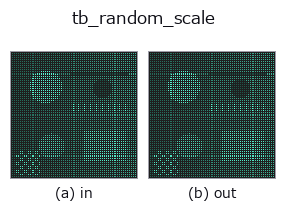

typed op• 데이터 종류: points → points
• 호출: fullseye.apply(img, "tb_random_scale", a=0.5, b=0.5)(2-D 는 이미지 1 장 + 스칼라 노브 2 개 a,b∈[0,1] 모델)

*그림은 128×128 합성 입력에서 실제로 실행한 출력. 왼쪽이 입력, 오른쪽이 출력. 점군은 위에서 본 산점도(밝기 = z), 1-D 열은 꺾은선, 볼륨은 z 방향 최대값 투영, 동영상은 가운데 프레임, 복소 영상은 진폭이며, 그림이 되지 않는 반환값은 값 자체를 표시한다.*
*노브 a 는 출력을 바꾸지 않는다(실측: 0.1 / 0.5 / 0.9에서 동일).*
*노브 b 는 출력을 바꾸지 않는다(실측: 0.1 / 0.5 / 0.9에서 동일).*
단계(앞에 오는 op → 이 op, 왼쪽에서 오른쪽으로):
▸ tb_random_scale: stages (docs site)
다른 영상에서도(합성 장면 / 사진 / 동전. 윗줄이 입력, 아랫줄이 그 출력. 노브는 기본값):
▸ tb_random_scale: other inputs (docs site)
원점을 중심으로 균등 스케일 `s ~ U(lo, hi)를 적용하고 (scaled, s)`를 반환한다.
> 아래 상세 설명은 원문입니다 —— 요약과 제목은 번역되어 있습니다.
`scaled = points * s。bbox 対角長はちょうど s 倍になる(s > 0` なので
`max/min が共に s 倍 → 対角 ‖max-min‖ も s` 倍)。物体スケールの
ばらつき(距離/センサ倍率)を学習に注入する。`0 < lo <= hi` を要求(fail-closed)。
`lo <= 0 または hi < lo は ValueError(lo == hi は許され常に s = lo`)。
原点まわりの拡大なので、雲が原点から離れていれば重心も `s` 倍の位置へ動く(位置と
大きさが同時に変わる)。大きさだけ変えたいなら事前に重心を原点へ寄せる。`s` は
Python float、返り値の点群は float64。`seed` で決定論的。空入力は空を返す。
2-D 進化レジストリへ橋渡しした 3d の op `random_scale。実装は同じで、呼び出し規約だけ op(v, a, b) に合わせてある。この op に調整点は無く、a も b` も使われない。
• 샘플 데이터 카탈로그(DL URL / 라이선스) —— 2-D 는 skimage.data(BSD/public)+ 합성, 3-D 는 실데이터 소스(Stanford/PDS 등)의 DL URL.
• 연산자의 내력·참고문헌 —— 이 연산자 족의 바탕이 된 연구/기법의 출처.
아래 프로그램은 실제로 실행됨을 확인했습니다(그림과 같은 입력). Studio 도움말에서는 이 블록이 버튼이 되어 즉시 불러와 실행할 수 있습니다.
img_to_points 0.50 0.50 tb_random_scale 0.50 0.50
▸ Load this pipeline · Load & run
아래 예제는 원래의 대장 op random_scale를 호출한다. 이 브리지 op는 같은 구현을 fn(v, a, b) 규약에 맞춘 것뿐이므로 동작은 그대로 적용된다(호출 형식만 다름).
• augment_pointcloud — py -3.11 examples_3d/augment_pointcloud.py
points 를 입력으로 받는 것)identity · tb_points_to_voxel · tb_estimate_point_normals · tb_iss_keypoints · tb_project_points · tb_render_point_depth · tb_statistical_outlier_removal · tb_radius_outlier_removal
typed)tb_points_to_voxel · tb_estimate_point_normals · tb_iss_keypoints · tb_project_points · tb_render_point_depth · tb_statistical_outlier_removal · tb_radius_outlier_removal · tb_voxel_grid_downsample
*Provenance: ops.py — 2D 연산자 레지스트리. 이 op 노트는 tools/opdocs.py md 가 자동 생성합니다(직접 편집하지 마세요).*
© 2026 Kazufumi Furuse — Fullseye operator documentation. Licensed under Apache-2.0.
{kind=link}
{kind=link}